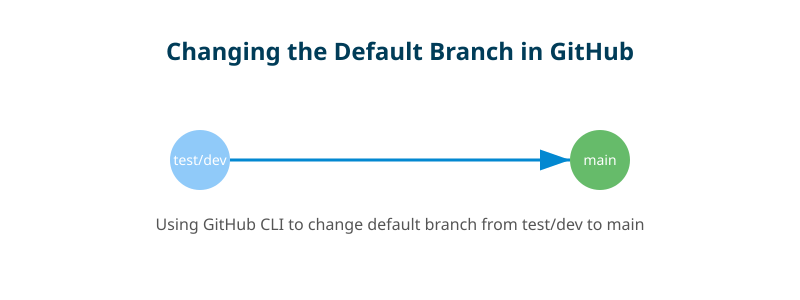

When I initially created a new repository, I set the default branch name as test/dev.
At the time, it seemed fine, but later, I realized that having a more standard name like
main or master would make it easier for other users to recognize and work with.
However, GitHub doesn’t allow renaming the default branch directly with a simple git branch -m
command like we do for local branches. Instead, I needed a proper sequence of commands to update the
default branch name without breaking anything. Along the way, I ran into a few issues—like missing
GitHub CLI (gh)—which I had to troubleshoot before successfully renaming my branch.
In this blog, I’ll walk you through how I fixed this and share the exact commands that worked for me.
Since I wanted to change the default branch using the GitHub CLI (gh), I first needed to install it.
I ran into an error:
bash: gh: command not foundTo fix this, I installed gh using the package manager:
For Debian/Ubuntu-based systems:
sudo apt update && sudo apt install ghFor Red Hat-based systems:
sudo dnf install ghFor MacOS (using Homebrew):
brew install ghOnce installed, I verified it with:
gh --versionAfter installing gh, I had to log in to authenticate my GitHub access:
gh auth loginDuring authentication, I selected:
GitHub provided a one-time code (FDE4-3978 in my case), which I entered into my browser to complete authentication.
To confirm authentication, I ran:
gh auth statusOnce I was authenticated, I changed the default branch name in GitHub using the following command:
gh repo edit --default-branch mainSince test/dev was no longer needed, I removed it from the remote repository:
git push origin --delete test/devAfter changing the default branch, my local branch was still tracking test/dev. To fix this, I updated the upstream branch:
git branch --unset-upstream
git branch --set-upstream-to=origin/mainRenaming the default branch in GitHub isn’t as straightforward as renaming a local branch, but with the right commands, it can be done smoothly. If you ever find yourself in a similar situation, I hope this guide helps you! 🚀